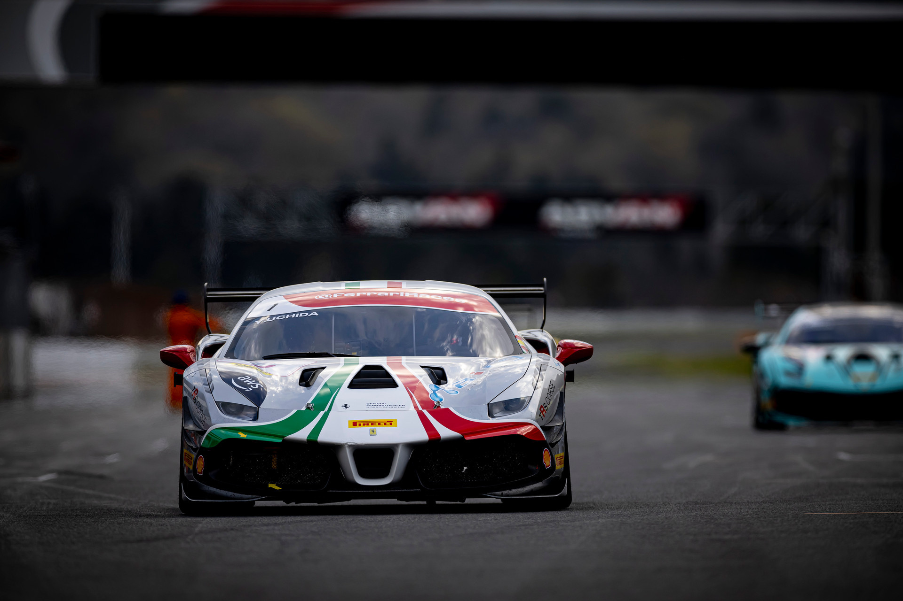

UCHIDA DOMINATES IN THE LAND OF THE RISING SUN
With eight victories and one second-place finish over the course of the nine races held, Yudai Uchida has made his mark on the first page of the winners’ roster of the Ferrari Challenge Japan – the national series inaugurated in 2023.
For Uchida, it is his third title in five years of competing in the Ferrari Challenge, as the Japanese champion won the Asia Pacific series in both 2020 and 2022, while also achieving success in the last races held in February in Dubai and Abu Dhabi, as part of the Winter Challenge.
The Japanese series saw Uchida clinch victory in the four races at the Fuji circuit, and at the races in Suzuka and Sugo, where the championship concluded. His only second-place finish came in the single race at Autopolis, in a weekend heavily influenced by the weather.
"It has been a successful season. Facing competitors such as Imada and Oshima in the Trofeo Pirelli class was really stimulating,” commented Uchida. It seems that the other classes had to calibrate themselves according to my data logger, and this makes me proud. I am already ready for the 2024 season; I can't wait to get back on the track, face new rivals, and try to become champion once again.”
Yudai Uchida's season unfolded not only in Japan, but also in Europe. The driver, in fact, also took part in the Le Mans round of the Ferrari Challenge Europe – when the one-make championship was a support event to the Centenary 24 Hours, won by the Ferrari 499P number 51. Uchida achieved an admirable fifth place in the Trofeo Pirelli Am and also starred in an extraordinary double-win in the two races that concluded the European series at the Mugello circuit in October.
